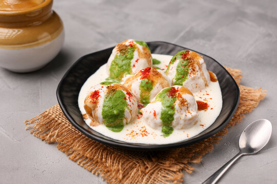

dahi Bhalle
In north india we make dahi vada or dahi bhalla usually during festive occasions like Diwali or Holi or when we have a get together at home. This recipe serves 20 to 22 people, if each person is served two vadas. This recipe can be halved also.
Making dahi bhalle takes time. you can make the sweet imli ki chutney and green chutney a day before. You can also prepare the vadas a day before. Soak them in water, squeeze out the water from the vadas and refrigerate. The papdis can be made at home or brought from outside. The chickpeas also can be cooked a day before and refrigerated.

Ingredients
for bhalla
- ½ cup urad dal or 125 grams urad dal
- 4 tablespoon moong dal
- 1.25 to 1.5 cups water for soaking
- 6 to 7 tablespoon water for grinding or add as required
- ½ teaspoon cumin seeds
- 1 pinch asafoetida (hing)
- salt as required
- oil for frying
- enough water for soaking the dals
other ingredients for dahi bhalla
- 2 cups Curd (ogurt) or curd made from 500 ml milk
- 1/3 cup pomegranate arils
- 1/3 cup sweet chutney
- 1/3 cup green chutney
- 20 to 25 papdis
- ½ cup cooked chana or white chickpeas or ¼ cup safed chana - pressure cooked till done
- 1 large potato - boiled, peeled and chopped
- chaat masala as required
- roasted cumin powder - as required
- red chili powder - as required
- black salt as required
- 2.5 cups water for soaking vadas
for green chutney
- 1 cup coriander leaves(cilantro leaves)
- 1 or 2 green chilies
- ½ inch ginger - chopped
- ½ teaspoon lemon or lime juice
- salt as required
- 1 to 2 teaspoon water for grinding chutney
for sweet tamarind chutney
- ½ cup seedless tamarind - tightly packed
- 1.75 cups water
- ½ teaspoon ginger powder (saunth)
- 1 pinch asafoetida (hing)
- ½ teaspoon cumin seeds
- ¼ teaspoon red chili powder
- 7 to 8 tablespoon jaggery or as required - adjust as per your taste (gud)
- rock salt (edible and food grade) or black salt or regular salt as required
- 1 teaspoon oil
Instructions
making sweet chutney
- Soak tamarind in water overnight or for 4-5 hours in a small bowl or pan.
- With your hands, squeeze the pulp from the tamarind in the same bowl or pan.
- Strain the pulp and keep aside.
- Heat oil in a small pan. lower the flame & add cumin seeds and let them crackle.
- Add ginger powder, red chili powder, asafoetida. Stir and add the strained tamarind pulp. cook for 2 to 3 minutes.
- Add the jaggery and salt and cook for 4 to 5 minutes more. the mixture would thicken.
- Let the saunth chutney mixture cool.
- When cooled, store the saunth chutney in an air-tight dry jar or container.
making green chutney
- Grind all the ingredients mentioned under the green chutney list with little water.
- Remove and keep aside in a small bowl.
making dahi bhalla batter
- Rinse ½ cup urad dal and 4 tbsp moong dal in water a couple of times. Then soak both the lentils overnight or for at least 4 to 5 hours.
- Drain them very well. Add the lentils to a grinder jar along with ½ tsp cumin seeds and a generous pinch of asafoetida. You can also add 1 tsp of roughly chopped ginger if you want.
- Add water in parts and grind all the ingredients to a smooth fluffy batter. On touching the batter, it should not feel grainy. I added 6 to 7 tbsp water. Depending on the quality of lentils and the capacity-volume of grinder, you can add less or more water. Don't add too much water as then the vadas become too crispy and soak a lot of oil.
- Take the ground batter in a bowl and add salt.
- Stir the batter briskly for a couple of minutes. This brisk stirring makes the batter more light and fluffy.
- The test to a correct consistency of this batter is the floating test. Take some water in a small bowl. Add 1 tsp of a batter in the water. The batter should float. If it does not float, this means the consistency is thin. Add some sooji or rice flour to the batter to thicken it.
frying bhalla and soaking in water
- Heat a kadai or pan with oil for deep frying.
- When the oil becomes medium hot, add a small amount of batter in the oil. It should come steadily and quickly on the surface. This means it is the right temperature to fry. Too cold oil will make the vadas soggy with oil and too high will brown them faster from outside, leaving the center uncooked.
- Add spoonfuls of the batter in the oil. Add according to the capacity of the pan or kadai.
- When they become pale golden, then turn them.
- Fry the vada till they become golden and crisp. Turn them a couple of times for even frying.
- Fry till golden and crisp. Remove with a slotted spoon.
- Drain on paper towels. Fry all the vadas in the same way.
- Once all the vadas are done with frying, then take 2.5 cups water in a wide bowl or pan.
- And add the vada to the water. Soak them for 20 to 25 minutes.
- Take each vada and flatten and press between your palms to remove excess water. Do this with all the vadas.
making dahi bhalla
- Take 2 cups fresh chilled curd in a bowl and beat it till smooth.
- Now gently place these vadas in the curd.
- Gently mix if you have used medium sized bowl, like how I have used. Now you can keep the vadas with the curd in the fridge and assemble when you want to serve. Or use them right away as the curd is chilled.
- Gather and assemble all your other ingredients like - boiled potato cubes, boiled white chickpeas, green chutney, tamarind chutney, pomegranate arils and the spice powders.
- To make individual portions of dahi bhalla, place 4 to 5 papdis in a plate.
- Place 2 to 3 dahi vadas in a plate. Add more curd or dahi if required.
- Top up with some boiled potatoes and chickpeas.
- Now add the green chutney, sweet tamarind chutney as required
- Sprinkle red chili powder, roasted cumin powder, chaat masala and black salt as per taste.
- Serve dahi bhalla immediately garnished with some chopped coriander leaves. You can also garnish with fine sev.